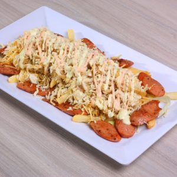

Salchipapa

Description
This street dish is most known in south american countries like Colombia,
Perú and Venezuela.The word "salchipapa" is a combination of the
spanish words "salchicha" and "papa" which mean sausage and
potatoe, respectively. Although this two foods can make for a
delicious plate (and in fact it is eaten like that in some places),
the one you can see in the image doesn't consists only of those two.
The example in the image is sometimes known as "Salchipapa costeña",
"costeña" being the traduction of "coastal", the term used to refer
to the people from the north coast of Colombia and it is the typical
way in which you'll see salchipapas in that part of the country.
It consists of french fries, sliced and roasted sausage, some veggies
as lettuce and onion, "queso costeño" which means "coastal cheese",
and some sauces as tartar, ketchup or some homemade sauce.
Ingredients
- Two decently sized potatos or a bag of frozen french fries.
- Any kind of sausage.
- Veggies of your liking (Recommended: lettuce, onion and green bell pepper).
- Cheese of your liking, grated and preferably not too salty.
- Your choice of sauces (Recommended: tartar and pineapple. Can't recommend any homemade
one as most stalls don't give the recipe).
Steps
- If you're using whole potatoes peel them,
then cut them into french fries and fry them.
If using frozen fries just fry them.
- Slice the sausage diagonally, so you end with oval shaped slices.
- Slice the onion and the green bell pepper into juliennes and roast them.
- Serve the fries and salt them a little, on top of them serve the sausages
and mix them, follow with a little bit of your sauces, top off with some choped lettuce,
the onions, the peppers and the grated cheese, then finish with a little more of the sauces.